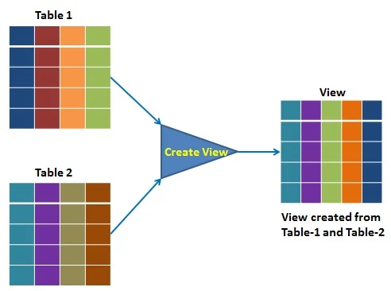

Consultas agregadas
Propuesta didáctica
En esta UT vamos a seguir trabajando el RA2: Crea bases de datos definiendo su estructura y las características de sus elementos según el modelo relacional y el RA3: Consulta la información almacenada en una base de datos empleando asistentes, herramientas gráficas y el lenguaje de manipulación de datos.
Criterios de evaluación
- CE2f: Se han creado vistas.
- CE3c: Se han realizado consultas sobre el contenido de varias tablas mediante composiciones internas.
- CE3d: Se han realizado consultas sobre el contenido de varias tablas mediante composiciones externas.
- CE3e: Se han realizado consultas resumen.
Contenidos
Realización de consultas:
- Consultas de resumen.
- Agrupamiento de registros.
Bases de datos relacionales:
- Vistas.
Cuestionario inicial
- ¿Cómo puedo saber cuántos registros tiene una tabla?
- ¿Y cuántos valores diferentes tiene un campo?
- ¿Es posible averiguar cuántos campos nulos tiene un campo?
- ¿Qué operadores puedo utilizar a la hora de agrupar filas?
- En una consulta con
GROUP BY, ¿podemos poner más campos en la proyección que en la agrupación? - ¿Para qué sirve la cláusula
WITH ROLLUP? - ¿Cuándo debo utilizar
HAVINGy cuándoWHERE? ¿Puedo utilizar ambas a la vez? - ¿Para qué sirven las funciones ventana?
- ¿Qué tamaño tiene una partición en una función ventana?
- ¿Qué funciones de clasificación conoces dentro de las funciones ventana?
- ¿Y funciones de valor?
- ¿Qué es una vista y cuándo es útil utilizarla?
- ¿Podemos crear una vista basada en otra vista?
- ¿Puedo insertar datos en una vista? ¿Siempre?
- ¿Podemos seguir utilizando una vista si se elimina la tabla original?
- ¿Qué diferencia una tabla de una vista y de una vista materializada?
Programación de Aula (10h)
Esta unidad es la séptima, siendo la segunda del bloque de consultas, impartiéndose al principio de la segunda evaluación, a principios de enero, con una duración estimada de 10 sesiones lectivas:
| Sesión | Contenidos | Actividades | Criterios trabajados |
|---|---|---|---|
| 1 | Consultas agregadas | AC701 | CE3e |
| 2 | Agrupando con GROUP BY | AC702 | CE3e |
| 3 | Supuesto | AC703 | CE3c, CE3d, CE3e |
| 4 | Filtrando con HAVING | AC706 | CE3c, CE3e |
| 5 | Supuesto | AC707 | CE3c, CE3e |
| 6 | Funciones ventana | AC708 | CE3c, CE3d, CE3e |
| 7 | Vistas | AC709 | CE2f |
| 8 | Supuesto | PR711 | CE2f, CE3c, CE3d, CE3e |
| 9 | Resolución Supuesto | ||
| 10 | Reto | PY712 | CE2f, CE3c, CE3d, CE3e |
Agregaciones
Las consultas agregadas en SQL son herramientas esenciales para analizar grandes volúmenes de datos al resumir información clave, como totales, promedios o conteos. Estas operaciones son fundamentales para generar informes y tomar decisiones informadas en cualquier ámbito que requiera análisis de datos.
Si volvemos a revisar la sintaxis SELECT ... FROM observamos las cláusulas GROUP BY y HAVING que no hemos utilizado hasta ahora:
SELECT {* | [DISTINCT] {columna | expresión} [[AS] alias], ... }
FROM tabla
[WHERE condición]
[GROUP BY col1 [, col2] ...]
[HAVING predicado grupo]
[ORDER BY col-n| pos-n [ASC|DESC] , col-m| pos-m [ASC|DES]…]
[LIMIT {[offset,] row_count | row_count OFFSET offset}];
En esta unidad vamos a trabajar con ellas, la cual nos permite agregar datos y realizar cálculos sobre columnas resumen.
Operadores de agregación
Tal como vimos en el apartado Funciones agregadas de la sesión anterior, podemos utilizar los operadores COUNT(expr), SUM(expr), MIN(expr), MAX(expr) y AVG(expr) para operar sobre una columna o expresión.
Para este apartado, nos vamos a centrar en la tabla de empleados:
select CodEmp, ExTelEmp, NomEmp, NumHi, SalEmp from empleado;
-- +--------+----------+-----------------------------+-------+------------+
-- | CodEmp | ExTelEmp | NomEmp | NumHi | SalEmp |
-- +--------+----------+-----------------------------+-------+------------+
-- | 1 | 1111 | Saladino Mandamás, Augusto | 1 | 7200000.00 |
-- | 2 | 2233 | Manrique Bacterio, Luisa | 0 | 4500000.00 |
-- | 3 | 2133 | Monforte Cid, Roldán | 1 | 5200000.00 |
-- | 4 | 3838 | Topaz Illán, Carlos | 0 | 3200000.00 |
-- | 5 | 1239 | Alada Veraz, Juana | 1 | 6200000.00 |
-- | 6 | 23838 | Gozque Altanero, Cándido | 1 | 5000000.00 |
-- | 7 | NULL | Forzado López, Galeote | 0 | 1600000.00 |
-- | 8 | NULL | Mascullas Alto, Eloísa | 1 | 1600000.00 |
-- | 9 | 12124 | Mando Correa, Rosa | 2 | 3100000.00 |
-- | 10 | NULL | Mosc Amuerta, Mario | 0 | 1300000.00 |
-- +--------+----------+-----------------------------+-------+------------+
-- 10 rows in set (0.000 sec)
Por ejemplo, podemos obtener la cantidad que gasta la empresa en salarios de los empleados utilizaremos la función SUM:
select SUM(SalEmp) from empleado;
-- +-------------+
-- | SUM(SalEmp) |
-- +-------------+
-- | 38900000.00 |
-- +-------------+
-- 1 row in set (0.001 sec)
En el caso de COUNT(expr) es muy común emplear COUNT(*) para indicar todos los elementos de la consulta resultante. Dicho esto, también podemos hacerlo sobre una determinada columna, obteniendo cuantos de dichos elementos contienen valor. Si la columna contiene valores nulos, los obviará y no formarán parte del cálculo.
select COUNT(*), COUNT(CodEmp), COUNT(ExTelEmp) from empleado;
-- +----------+---------------+-----------------+
-- | COUNT(*) | COUNT(CodEmp) | COUNT(ExTelEmp) |
-- +----------+---------------+-----------------+
-- | 10 | 10 | 7 |
-- +----------+---------------+-----------------+
-- 1 row in set (0.001 sec)
En este caso, obtenemos que tenemos diez registros, diez valores en código de empleado (que, al ser clave primaria, debe coincidir con el total de registros), pero en cambio sólo tenemos 7 extensiones telefónicas.
Si lo que nos interesa es la cantidad de valores distintos que tenemos de una columna, podemos hacer un COUNT(DISTINCT expr):
select COUNT(*), COUNT(ExTelEmp), COUNT(DISTINCT(ExTelEmp)), COUNT(NumHi), COUNT(DISTINCT(NumHi)) from empleado;
-- +----------+-----------------+---------------------------+--------------+------------------------+
-- | COUNT(*) | COUNT(ExTelEmp) | COUNT(DISTINCT(ExTelEmp)) | COUNT(NumHi) | COUNT(DISTINCT(NumHi)) |
-- +----------+-----------------+---------------------------+--------------+------------------------+
-- | 10 | 7 | 7 | 10 | 3 |
-- +----------+-----------------+---------------------------+--------------+------------------------+
-- 1 row in set (0.000 sec)
Aquí podemos observar cómo de las 7 extensiones telefónicas que teníamos, ninguna se repite. Pero en cambio, sabemos que todos los empleados tienen la cantidad de hijos anotados y que tenemos 3 posibles valores (0, 1 y 2 hijos)
Funciones de agregación anidadas
No es posible anidar funciones de agregación. Por ejemplo, no podemos hacer SUM(COUNT(*)) o MAX(SUM(SalEmp)). Si queremos realizar este tipo de cálculos, deberemos hacerlo en varias consultas haciendo uso de subconsultas o CTE (las estudiaremos en la siguiente unidad) o utilizando funciones ventana.
COUNT(*) FILTER
En PostreSQL podemos utilizar expresiones agregadas sobre las funciones de agregación. Una de las expresiones más utilizadas es FILTER. Por ejemplo, podemos filtrar los elementos que queremos contar de una determinada expresión:
PostgreSQL
select count(*),
count(*) FILTER (where "NumHi" = 0) as filtrado_sin_hijos
from empleado e;
-- count | filtrado_sin_hijos
-- -------+--------------------
-- 10 | 4
-- (1 row)
GROUP BY
La cláusula GROUP BY se utiliza para agrupar filas que tienen valores iguales en una o más columnas. Esto permite aplicar funciones de agregación como SUM, COUNT, AVG, etc., a cada grupo, es decir, permite realizar cálculos en vertical, sobre el resultado de agrupar registros.

Group by - https://learnsql.es
Los pasos que vamos a realizar son:
select: Indicar las columnas a agrupar.select: Indicar los cálculos mediante funciones agregadas (count,sum,max,min,avg, ...)GROUP BY: indicar las agrupaciones (deben coincidir al menos con las columnas a mostrar)
Para demostrar su uso, nos vamos a centrar en los departamentos y su presupuesto anual. Veamos los datos que tenemos almacenados:
select NomDep, PreAnu, CodCen from departamento;
-- +----------------------------+--------------+--------+
-- | NomDep | PreAnu | CodCen |
-- +----------------------------+--------------+--------+
-- | Administración Zona Sur | 14000000.00 | OFZS |
-- | Dirección General | 26000000.00 | DIGE |
-- | Investigación y Diseño | 25000000.00 | DIGE |
-- | Jefatura Fábrica Zona Sur | 6200000.00 | FAZS |
-- | Producción Zona Sur | 108000000.00 | FAZS |
-- | Ventas Zona Sur | 13500000.00 | OFZS |
-- +----------------------------+--------------+--------+
-- 6 rows in set (0.000 sec)
Podemos observar que tenemos 6 departamentos repartidos en 3 centros. ¿Y si quiero saber el presupuesto anual asignado a cada centro? Para ello, necesito agrupar por el código del centro y sumar los presupuestos. En la parte de select indicamos los datos a mostrar, y en group by las columnas por las que debe agrupar:
select CodCen, SUM(PreAnu)
from departamento
GROUP BY CodCen;
-- +--------+--------------+
-- | CodCen | sum(PreAnu) |
-- +--------+--------------+
-- | DIGE | 51000000.00 |
-- | FAZS | 114200000.00 |
-- | OFZS | 27500000.00 |
-- +--------+--------------+
-- 3 rows in set (0.002 sec)
Es decir, el valor de 51000000.00 del centro DIGE se obtiene de sumar las filas de la tabla anterior de dicho centro, es decir, 26000000.00 y 25000000.00 de los departamentos Dirección General e Investigación y Diseño. Dicho de otro modo, al realizar una agrupación, junto las filas que tienen el mismo valor en la columna agrupada, y realiza el cálculo indicado con dichas filas.
¿Y si quiero obtener el nombre del centro en vez de su código? Podemos pensar que, si hago un join y muestro su nombre y el presupuesto, obtendré la misma información:
select c.NomCen, d.PreAnu
from departamento d join centro c on d.CodCen=c.CodCen;
-- +--------------------+--------------+
-- | NomCen | PreAnu |
-- +--------------------+--------------+
-- | Dirección General | 26000000.00 |
-- | Dirección General | 25000000.00 |
-- | Fábrica Zona Sur | 6200000.00 |
-- | Fábrica Zona Sur | 108000000.00 |
-- | Oficinas Zona Sur | 14000000.00 |
-- | Oficinas Zona Sur | 13500000.00 |
-- +--------------------+--------------+
-- 6 rows in set (0.002 sec)
Pero no. Obtengo el resultado de realizar la combinación de las dos tablas, no el cálculo agregado sobre dichos centros. Así pues, necesito agrupar el resultado del join:
select c.NomCen, SUM(d.PreAnu)
from departamento d join centro c on d.CodCen=c.CodCen
GROUP BY c.NomCen;
-- +--------------------+---------------+
-- | NomCen | SUM(d.PreAnu) |
-- +--------------------+---------------+
-- | Dirección General | 51000000.00 |
-- | Fábrica Zona Sur | 114200000.00 |
-- | Oficinas Zona Sur | 27500000.00 |
-- +--------------------+---------------+
-- 3 rows in set (0.000 sec)
Agrupaciones con combinaciones externas
En la sesión anterior obtuvimos las diferentes habilidades que tenían los empleados:
select e.CodEmp, e.NomEmp, he.*
from empleado e inner join habemp he on e.CodEmp = he.CodEmp;
-- +--------+-----------------------------+--------+--------+--------+
-- | CodEmp | NomEmp | CodHab | CodEmp | NivHab |
-- +--------+-----------------------------+--------+--------+--------+
-- | 1 | Saladino Mandamás, Augusto | GEREN | 1 | 10 |
-- | 1 | Saladino Mandamás, Augusto | RELPU | 1 | 9 |
-- | 3 | Monforte Cid, Roldán | MARKE | 3 | 9 |
-- | 5 | Alada Veraz, Juana | GESCO | 5 | 9 |
-- | 5 | Alada Veraz, Juana | RELPU | 5 | 8 |
-- | 8 | Mascullas Alto, Eloísa | FONTA | 8 | 7 |
-- +--------+-----------------------------+--------+--------+--------+
-- 6 rows in set (0.001 sec)
Si queremos calcular cuantas habilidades tiene un empleado haremos:
select e.NomEmp, COUNT(he.CodEmp)
from empleado e inner join habemp he on e.CodEmp = he.CodEmp
GROUP BY e.NomEmp;
-- +-----------------------------+------------------+
-- | NomEmp | COUNT(he.CodEmp) |
-- +-----------------------------+------------------+
-- | Alada Veraz, Juana | 2 |
-- | Mascullas Alto, Eloísa | 1 |
-- | Monforte Cid, Roldán | 1 |
-- | Saladino Mandamás, Augusto | 2 |
-- +-----------------------------+------------------+
-- 4 rows in set (0.000 sec)
El problema es que sólo aparecen los empleados que tienen habilidades, y realmente nos interesa que aparezcan todos los empleados, y si no tienen habilidades, que salga 0. Así pues, necesitamos hacer un left join para que salgan todos los empleados, independientemente de si tienen alguna habilidad:
select e.NomEmp, COUNT(he.CodEmp)
from empleado e left join habemp he on e.CodEmp = he.CodEmp
GROUP BY e.NomEmp;
-- +-----------------------------+------------------+
-- | NomEmp | COUNT(he.CodEmp) |
-- +-----------------------------+------------------+
-- | Alada Veraz, Juana | 2 |
-- | Forzado López, Galeote | 0 |
-- | Gozque Altanero, Cándido | 0 |
-- | Mando Correa, Rosa | 0 |
-- | Manrique Bacterio, Luisa | 0 |
-- | Mascullas Alto, Eloísa | 1 |
-- | Monforte Cid, Roldán | 1 |
-- | Mosc Amuerta, Mario | 0 |
-- | Saladino Mandamás, Augusto | 2 |
-- | Topaz Illán, Carlos | 0 |
-- +-----------------------------+------------------+
-- 10 rows in set (0.000 sec)
Agrupaciones compuestas
También es posible agrupar por más de una columna. Por ejemplo, podemos obtener el gasto en salario de empleados por centros y departamentos. Para ello, primero necesito combinar las tres tablas, y luego agrupar por el criterio deseado:
select c.NomCen, d.NomDep, SUM(e.SalEmp)
from departamento d join centro c on d.CodCen=c.CodCen
join empleado e on e.CodDep = d.CodDep
GROUP BY c.NomCen, d.NomDep;
-- +--------------------+----------------------------+---------------+
-- | NomCen | NomDep | SUM(e.SalEmp) |
-- +--------------------+----------------------------+---------------+
-- | Dirección General | Dirección General | 7200000.00 |
-- | Dirección General | Investigación y Diseño | 4500000.00 |
-- | Fábrica Zona Sur | Jefatura Fábrica Zona Sur | 5000000.00 |
-- | Fábrica Zona Sur | Producción Zona Sur | 7600000.00 |
-- | Oficinas Zona Sur | Administración Zona Sur | 6200000.00 |
-- | Oficinas Zona Sur | Ventas Zona Sur | 8400000.00 |
-- +--------------------+----------------------------+---------------+
-- 6 rows in set (0.001 sec)
SELECT N - GROUP BY N
Es importante destacar que al menos la cantidad y datos que utilizamos en la proyección (SELECT) que agrupan, también hemos de utilizarlos dentro del GROUP BY. Dicho de otro modo, si en el SELECT ponemos tres columnas y dos cálculos, en el GROUP BY deberemos poner las tres mismas columnas.
Es decir, no debemos hacer esto (dos en SELECT, uno en GROUP BY), ya que no estaría mostrando la información que queremos. Si repetimos el ejemplo anterior, obtenemos un resultado en MariaDB , pero lo que obtenemos no es correcto (en PosgreSQL directamente obtendremos un error):
SELECT c.NomCen, d.NomDep, SUM(e.SalEmp)
from departamento d join centro c on d.CodCen=c.CodCen
join empleado e on e.CodDep = d.CodDep
GROUP BY c.NomCen;
-- +--------------------+----------------------------+---------------+
-- | NomCen | NomDep | SUM(e.SalEmp) |
-- +--------------------+----------------------------+---------------+
-- | Dirección General | Dirección General | 11700000.00 |
-- | Fábrica Zona Sur | Jefatura Fábrica Zona Sur | 12600000.00 |
-- | Oficinas Zona Sur | Administración Zona Sur | 14600000.00 |
-- +--------------------+----------------------------+---------------+
-- 3 rows in set (0.000 sec)
En cambio, sí que es correcto agrupar por más columnas de las que mostramos (aunque su uso es cuestionable):
SELECT d.NomDep, SUM(e.SalEmp)
from departamento d join centro c on d.CodCen=c.CodCen
join empleado e on e.CodDep = d.CodDep
GROUP BY c.NomCen, d.NomDep;
-- +----------------------------+---------------+
-- | NomDep | SUM(e.SalEmp) |
-- +----------------------------+---------------+
-- | Dirección General | 7200000.00 |
-- | Investigación y Diseño | 4500000.00 |
-- | Jefatura Fábrica Zona Sur | 5000000.00 |
-- | Producción Zona Sur | 7600000.00 |
-- | Administración Zona Sur | 6200000.00 |
-- | Ventas Zona Sur | 8400000.00 |
-- +----------------------------+---------------+
-- 6 rows in set (0.000 sec)
ROLLUP
Cuando hacemos una consulta con una agregación, podemos emplear la cláusula SELECT ... WITH ROLLUP para que añada filas extras con totales de la agregación.
Si recuperamos la consulta que obteníamos el presupuesto anual de cada departamento, pero le añadimos WITH ROLLUP podemos observar cómo añade al resultado una nueva fila agrupada por NULL y que suma todos los otros valores:
select CodCen, sum(PreAnu) from departamento
group by CodCen
WITH ROLLUP;
-- +--------+--------------+
-- | CodCen | sum(PreAnu) |
-- +--------+--------------+
-- | DIGE | 51000000.00 |
-- | FAZS | 114200000.00 |
-- | OFZS | 27500000.00 |
-- | NULL | 192700000.00 |
-- +--------+--------------+
-- 4 rows in set (0.004 sec)
En el caso de que la consulta agrupe por más de un valor, mostrará los diferentes subtotales:
select c.NomCen, d.NomDep, sum(e.SalEmp)
from departamento d join centro c on d.CodCen=c.CodCen
join empleado e on e.CodDep = d.CodDep
group by c.NomCen, d.NomDep
WITH ROLLUP;
-- +--------------------+----------------------------+---------------+
-- | NomCen | NomDep | sum(e.SalEmp) |
-- +--------------------+----------------------------+---------------+
-- | Dirección General | Dirección General | 7200000.00 |
-- | Dirección General | Investigación y Diseño | 4500000.00 |
-- | Dirección General | NULL | 11700000.00 |
-- | Fábrica Zona Sur | Jefatura Fábrica Zona Sur | 5000000.00 |
-- | Fábrica Zona Sur | Producción Zona Sur | 7600000.00 |
-- | Fábrica Zona Sur | NULL | 12600000.00 |
-- | Oficinas Zona Sur | Administración Zona Sur | 6200000.00 |
-- | Oficinas Zona Sur | Ventas Zona Sur | 8400000.00 |
-- | Oficinas Zona Sur | NULL | 14600000.00 |
-- | NULL | NULL | 38900000.00 |
-- +--------------------+----------------------------+---------------+
-- 10 rows in set (0.001 sec)
PostgreSQL
En el caso de PostgreSQL cabe destacar que no tiene soporte para WITH ROLLUP. En cambio, dispone de otras funciones similares como GROUPING SETS, CUBE y ROLLUP.
HAVING
La cláusula HAVING permite filtrar tras realizar los cálculos de agrupación. Sería similar al WHERE pero una vez realizados los datos agregados.
El orden de ejecución de las cláusulas dentro de una consulta es:
WHEREque filtra las filas según las condiciones que pongamos.GROUP BYque crea una tabla agregada a partir de las columnas que agrupa.HAVINGfiltra los grupos.ORDER BYque ordena o clasifica la salida.
Para estos ejemplos, nos vamos a centrar en el presupuesto anual de los centros. Para ello, agrupamos por el nombre del centro y sumamos los presupuestos anuales de cada departamento:
select c.NomCen, sum(d.PreAnu) as PreCen
from departamento d join centro c on d.CodCen=c.CodCen
group by (c.NomCen);
-- +--------------------+--------------+
-- | NomCen | PreCen |
-- +--------------------+--------------+
-- | Dirección General | 51000000.00 |
-- | Fábrica Zona Sur | 114200000.00 |
-- | Oficinas Zona Sur | 27500000.00 |
-- +--------------------+--------------+
-- 3 rows in set (0.002 sec)
Si de este resultado quiero filtrar aquellos con más de 100.000.000 de presupuesto, necesito hacerlo mediante la cláusula HAVING:
select c.NomCen, sum(d.PreAnu) as PreCen
from departamento d join centro c on d.CodCen=c.CodCen
group by (c.NomCen)
HAVING sum(d.PreAnu) > 100000000;
-- +-------------------+--------------+
-- | NomCen | PreCen |
-- +-------------------+--------------+
-- | Fábrica Zona Sur | 114200000.00 |
-- +-------------------+--------------+
-- 1 row in set (0.007 sec)
Por supuesto, también podemos incluir un filtrado previo a la ejecución. Por ejemplo, para obtener el centro y presupuesto anual de aquellos centros con más de 100.000.000 de presupuesto y que sus departamentos tengan un presupuesto anual superior a 20.000.000, haríamos:
select c.NomCen, SUM(d.PreAnu)
from departamento d join centro c on d.CodCen=c.CodCen
where d.PreAnu > 20000000
group by (c.NomCen)
HAVING SUM(d.PreAnu) > 100000000;
Hagamos otro ejemplo. Supongamos que queremos recuperar el número de empleados que tiene cada departamento, pero sólo aquellos departamentos que tengan justo 2 empleados. Para ello, primero necesitamos hacer un join entre las tablas de departamento y empleado, luego agrupar por el nombre del departamento y contar el número de empleados. Finalmente, filtramos por aquellos departamentos que tengan exactamente 2 empleados:
select d.NomDep, COUNT(e.CodEmp) as NumEmp
from departamento d join empleado e on e.CodDep = d.CodDep
group by d.NomDep
HAVING NumEmp = 2;
-- +-----------------+--------+
-- | NomDep | NumEmp |
-- +-----------------+--------+
-- | Ventas Zona Sur | 2 |
-- +-----------------+--------+
-- 1 row in set (0.006 sec)
En este caso, como estamos filtrando sobre el resultado de una función de agregación (count), debemos utilizar HAVING. Además, en vez de poner la función de agregación, hemos utilizado el alias de la función que hemos definido en el select.
En cambio, si intentamos hacerlo con WHERE, obtendremos un error:
select d.NomDep, COUNT(e.CodEmp) as NumEmp
from departamento d join empleado e on e.CodDep = d.CodDep
group by d.NomDep
WHERE COUNT(e.CodEmp) = 2;
-- ERROR 1064 (42000): You have an error in your SQL syntax; check the manual that corresponds to your MariaDB server version for the right syntax to use near 'WHERE COUNT(e.CodEmp) = 2' at line 4
Recuerda
Recuerda que WHERE filtra las filas antes de aplicar la agrupación, mientras que HAVING filtra los grupos después de que se han calculado las funciones de agregación. Dicho de otro modo, si la condición involucra una función de agregación (COUNT, SUM, AVG...), debemos utilizar HAVING. Si no, es cuando lo colocamos en WHERE.
Orden de ejecución
En este punto que ya hemos visto la mayoría de las cláusulas dentro de una consulta SQL, es conveniente tener claro su orden de ejecución.
Las etapas de ejecución de una consulta son:
FROMyJOIN: selección de tablas y su combinación, tanto internas como externasWHERE: filtrado de los datosGROUP BY: agrupación/agregaciónHAVING: filtrado de la agrupaciónSELECTyDISTINCT: proyección de los camposORDER BY: ordenación del resultadoLIMIT: filtrado del resultado
A modo de ejemplo tendríamos:
SELECT DISTINCT c.NomCen -- 5.1 y 5.2
FROM departamento d -- 1.1
JOIN centro c ON d.CodCen=c.CodCen -- 1.2
WHERE d.PreAnu > 20000000 -- 2
GROUP BY c.NomCen -- 3
HAVING SUM(d.PreAnu) > 100000000 -- 4
ORDER BY c.CodCen -- 6
LIMIT 1 OFFSET 2 -- 7
Errores comunes
De forma general, los errores más comunes a la hora de realizar consultas son:
- No usar
WHEREen las modificaciones o eliminaciones. ¡No te olvide de poner elWHEREen elDELETE FROM! - Confundir la comparación de valores nulos, utilizando la asignación en vez del operador
IS NULL:
--- Incorrecto
select * from empleado where ExTelEmp = NULL
-- Correcto
select * from empleado where ExTelEmp is NULL
- No comprobar la existencia de uno o más valores en las subconsultas. Si la subconsulta devuelve un único registro, podemos usar =. Si no, deberemos utilizar IN:
``` --- Incorrecto si la subconsulta retorna más de una fila select * from departamento where PreAnu = (select Max(PreAnu) from departamento);
-- Mejor, ya que podemos tener dos departamento con el mismo presupuesto máximo
select * from departamento
where PreAnu in (select Max(PreAnu) from departamento);
``
- UtilizarHAVINGpara filtrar filas en lugar deWHERE: La cláusulaHAVINGse ejecuta después deGROUP BYy está pensada para filtrar datos agregados. Si estás filtrando datos no agregados, pertenece a la cláusulaWHERE`. Conocer la diferencia en el orden de ejecución entre WHERE y HAVING te ayuda a determinar dónde debe colocarse cada condición.
Si quiero obtener los departamentos que tiene más de 5 empleados:
-- Incorrecto
select CodDep, count(*) as total
from empleado
WHERE count(*) > 5
group by CodDep;
-- Correcto
select CodDep, count(*) as total
from empleado
group by CodDep
HAVING count(*) > 5;
- Uso incorrecto de agregaciones en SELECT sin GROUP BY: Puesto que GROUP BY se ejecuta antes que HAVING o SELECT, si no agrupas tus datos antes de aplicar una función de agregado, se producirán resultados incorrectos o errores. Comprender el orden de ejecución aclara por qué estas dos cláusulas deben ir juntas.
Funciones ventana
Desde SQL:2003 podemos emplear las funciones ventana, las cuales son similares a las consultas group by en cuanto que permiten ejecutar funciones agregadas en varias filas. La diferencia es que permiten funciones de agregación incorporadas sin necesidad de agrupar cada campo en una sola fila, es decir, permiten realizar cálculos en horizontal.

Funciones Ventana - https://learnsql.com
Vamos a realizar un ejemplo para entender mejor qué podemos obtener mediante su uso. Para ello, vamos a recuperar para cada empleado, cuantos empleados trabajan en su mismo departamento, es decir, cuantos compañeros tiene.
Nuestra primera idea, para obtener cuantas personas trabajan en un departamento, es agrupar por el código del departamento y contar cuantas personas trabajan.
select CodDep, count(*) from empleado group by CodDep;
-- +--------+----------+
-- | CodDep | count(*) |
-- +--------+----------+
-- | ADMZS | 1 |
-- | DIRGE | 1 |
-- | IN&DI | 1 |
-- | JEFZS | 1 |
-- | PROZS | 4 |
-- | VENZS | 2 |
-- +--------+----------+
-- 6 rows in set (0.000 sec)
Pero realmente queremos saber para cada empleado, cuantas personas trabajan con él, y por lo tanto, necesitamos obtener, por ejemplo, su nombre. Si intentamos seleccionar la columna NomEmp sin agrupar por ella, recuperaremos unos datos que no son los esperados (o en algunos SGBD incluso un error), ya que nos muestra el primer empleado de cada departamento:
select NomEmp, CodDep, count(*)
from empleado group by CodDep;
-- +-----------------------------+--------+----------+
-- | NomEmp | CodDep | count(*) |
-- +-----------------------------+--------+----------+
-- | Alada Veraz, Juana | ADMZS | 1 |
-- | Saladino Mandamás, Augusto | DIRGE | 1 |
-- | Manrique Bacterio, Luisa | IN&DI | 1 |
-- | Gozque Altanero, Cándido | JEFZS | 1 |
-- | Forzado López, Galeote | PROZS | 4 |
-- | Monforte Cid, Roldán | VENZS | 2 |
-- +-----------------------------+--------+----------+
-- 6 rows in set (0.000 sec)
Mientras que una cláusula group by devolverá un registro por cada valor de grupo coincidente, una función de ventana, la cual no contrae los resultados por grupo, puede devolver un registro distinto para cada fila.
Así que, si quisiéramos obtener el nombre de todos los empleados, y además, cuantos compañeros tiene, podemos realizar una partición por el código del empleado. Para ello, hemos de utilizar la cláusula OVER (PARTITION BY campo) precedida de la función ventana que queramos emplear; en este caso, contaremos:
select NomEmp, CodDep,
count(*) OVER (PARTITION BY CodDep) as companyeros
from empleado;
-- +-----------------------------+--------+-------------+
-- | NomEmp | CodDep | companyeros |
-- +-----------------------------+--------+-------------+
-- | Alada Veraz, Juana | ADMZS | 1 |
-- | Saladino Mandamás, Augusto | DIRGE | 1 |
-- | Manrique Bacterio, Luisa | IN&DI | 1 |
-- | Gozque Altanero, Cándido | JEFZS | 1 |
-- | Forzado López, Galeote | PROZS | 4 |
-- | Mando Correa, Rosa | PROZS | 4 |
-- | Mascullas Alto, Eloísa | PROZS | 4 |
-- | Mosc Amuerta, Mario | PROZS | 4 |
-- | Topaz Illán, Carlos | VENZS | 2 |
-- | Monforte Cid, Roldán | VENZS | 2 |
-- +-----------------------------+--------+-------------+
-- 10 rows in set (0.000 sec)
Sintaxis
La sintaxis básica que emplearemos es:
SELECT funcion_ventana()
OVER (PARTITION BY campo)
FROM tabla;
Las consultas que utilizan funciones ventana dividen los datos en grupos (ventanas) con la cláusula OVER y luego aplican una función a cada ventana. La cláusula PARTITION BY dentro de OVER define cómo se dividen los datos en esas ventanas.
Podemos pensar en PARTITION BY como algo parecido a GROUP BY, pero en lugar de agrupar los resultados, lo hacemos fuera de la lista de atributos SELECT, y por lo tanto, combina los resultados en menos filas y devuelve los valores agrupados como cualquier otro campo (calculando sobre la variable agrupada pero, por lo demás, como un atributo más).
Respecto a las funciones ventana que podemos utilizar, se pueden dividir en tres tipos:
- Agregadas, con los operadores ya vistos, como
SUM,COUNT,AVG, etc... - Ranking o clasificación, como
ROW_NUMBER(),RANK(),NTILE(), etc... - De valor, como
LAG(),LEAD(),FIRST_VALUE(),LAST_VALUE(), etc...
Otros ejemplos de consultas con funciones ventana, utilizando operadores y funciones específicas, pueden ser:
- Número de empleado en cada departamento (mediante
ROW_NUMBER())
select ROW_NUMBER() OVER (PARTITION BY CodDep) as NumEmp,
CodEmp, NomEmp, CodDep
from empleado;
-- +--------+--------+-----------------------------+--------+
-- | NumEmp | CodEmp | NomEmp | CodDep |
-- +--------+--------+-----------------------------+--------+
-- | 1 | 5 | Alada Veraz, Juana | ADMZS |
-- | 1 | 1 | Saladino Mandamás, Augusto | DIRGE |
-- | 1 | 2 | Manrique Bacterio, Luisa | IN&DI |
-- | 1 | 6 | Gozque Altanero, Cándido | JEFZS |
-- | 1 | 7 | Forzado López, Galeote | PROZS |
-- | 2 | 9 | Mando Correa, Rosa | PROZS |
-- | 3 | 8 | Mascullas Alto, Eloísa | PROZS |
-- | 4 | 10 | Mosc Amuerta, Mario | PROZS |
-- | 1 | 4 | Topaz Illán, Carlos | VENZS |
-- | 2 | 3 | Monforte Cid, Roldán | VENZS |
-- +--------+--------+-----------------------------+--------+
-- 10 rows in set (0.001 sec)
- Ranking de salarios de los empleados por departamento (mediante rank(), la cual en caso de empate, asigna el mismo número)
select RANK() OVER (PARTITION BY CodDep ORDER BY SalEmp DESC) as RanEmp,
NomEmp, CodDep, SalEmp
from empleado;
-- +--------+-----------------------------+--------+------------+
-- | RanEmp | NomEmp | CodDep | SalEmp |
-- +--------+-----------------------------+--------+------------+
-- | 1 | Alada Veraz, Juana | ADMZS | 6200000.00 |
-- | 1 | Saladino Mandamás, Augusto | DIRGE | 7200000.00 |
-- | 1 | Manrique Bacterio, Luisa | IN&DI | 4500000.00 |
-- | 1 | Gozque Altanero, Cándido | JEFZS | 5000000.00 |
-- | 1 | Mando Correa, Rosa | PROZS | 3100000.00 |
-- | 2 | Forzado López, Galeote | PROZS | 1600000.00 |
-- | 2 | Mascullas Alto, Eloísa | PROZS | 1600000.00 |
-- | 4 | Mosc Amuerta, Mario | PROZS | 1300000.00 |
-- | 1 | Monforte Cid, Roldán | VENZS | 5200000.00 |
-- | 2 | Topaz Illán, Carlos | VENZS | 3200000.00 |
-- +--------+-----------------------------+--------+------------+
-- 10 rows in set (0.001 sec)
- Porcentaje de salario de cada empleado respecto al acumulado por su departamento
select NomEmp, SalEmp, CodDep,
sum(SalEmp) OVER (PARTITION BY CodDep) as SalDep,
round((SalEmp / sum(SalEmp) OVER (PARTITION BY CodDep)) * 100, 2) as PorSal
from empleado;
-- +-----------------------------+------------+--------+------------+--------+
-- | NomEmp | SalEmp | CodDep | SalDep | PorSal |
-- +-----------------------------+------------+--------+------------+--------+
-- | Alada Veraz, Juana | 6200000.00 | ADMZS | 6200000.00 | 100.00 |
-- | Saladino Mandamás, Augusto | 7200000.00 | DIRGE | 7200000.00 | 100.00 |
-- | Manrique Bacterio, Luisa | 4500000.00 | IN&DI | 4500000.00 | 100.00 |
-- | Gozque Altanero, Cándido | 5000000.00 | JEFZS | 5000000.00 | 100.00 |
-- | Mando Correa, Rosa | 3100000.00 | PROZS | 7600000.00 | 40.79 |
-- | Mascullas Alto, Eloísa | 1600000.00 | PROZS | 7600000.00 | 21.05 |
-- | Forzado López, Galeote | 1600000.00 | PROZS | 7600000.00 | 21.05 |
-- | Mosc Amuerta, Mario | 1300000.00 | PROZS | 7600000.00 | 17.11 |
-- | Monforte Cid, Roldán | 5200000.00 | VENZS | 8400000.00 | 61.90 |
-- | Topaz Illán, Carlos | 3200000.00 | VENZS | 8400000.00 | 38.10 |
-- +-----------------------------+------------+--------+------------+--------+
- Para cada empleado, mostrar su salario y cuanto cobra de más y de menos respecto a sus compañeros más inmediatos del departamento (utilizando las funciones para obtener el anterior, con LAG y el siguiente mediante LEAD).
select NomEmp, SalEmp, CodDep,
LAG(SalEmp) OVER (PARTITION BY CodDep ORDER BY SalEmp DESC) as SalAnt,
LEAD(SalEmp) OVER (PARTITION BY CodDep ORDER BY SalEmp DESC) as SalSig,
SalEmp - LAG(SalEmp) OVER (PARTITION BY CodDep ORDER BY SalEmp DESC) as DifAnt,
LEAD(SalEmp) OVER (PARTITION BY CodDep ORDER BY SalEmp DESC) - SalEmp as DifSig
from empleado;
-- +-----------------------------+------------+--------+------------+------------+-------------+-------------+
-- | NomEmp | SalEmp | CodDep | SalAnt | SalSig | DifAnt | DifSig |
-- +-----------------------------+------------+--------+------------+------------+-------------+-------------+
-- | Alada Veraz, Juana | 6200000.00 | ADMZS | NULL | NULL | NULL | NULL |
-- | Saladino Mandamás, Augusto | 7200000.00 | DIRGE | NULL | NULL | NULL | NULL |
-- | Manrique Bacterio, Luisa | 4500000.00 | IN&DI | NULL | NULL | NULL | NULL |
-- | Gozque Altanero, Cándido | 5000000.00 | JEFZS | NULL | NULL | NULL | NULL |
-- | Mando Correa, Rosa | 3100000.00 | PROZS | NULL | 1600000.00 | NULL | -1500000.00 |
-- | Mascullas Alto, Eloísa | 1600000.00 | PROZS | 3100000.00 | 1600000.00 | -1500000.00 | 0.00 |
-- | Forzado López, Galeote | 1600000.00 | PROZS | 1600000.00 | 1300000.00 | 0.00 | -300000.00 |
-- | Mosc Amuerta, Mario | 1300000.00 | PROZS | 1600000.00 | NULL | -300000.00 | NULL |
-- | Monforte Cid, Roldán | 5200000.00 | VENZS | NULL | 3200000.00 | NULL | -2000000.00 |
-- | Topaz Illán, Carlos | 3200000.00 | VENZS | 5200000.00 | NULL | -2000000.00 | NULL |
-- +-----------------------------+------------+--------+------------+------------+-------------+-------------+
-- 10 rows in set (0.001 sec)
Las funciones ventana son un aspecto avanzado a la hora de realizar consultas. Si quieres profundizar más en su aprendizaje, te recomiendo comenzar por el siguiente artículo: Una guía para principiantes para comprender las funciones de la ventana SQL y sus capacidades, así como en modificar el tamaño de la ventana
Vistas
Si retomamos la arquitectura de tres niveles que estudiamos en la primera unidad, un esquema externo, que es a lo que accede el usuario final, se compone de un conjunto de tablas y vistas que luego se transforman en formularios y/o informes.
Dicho esto, una vista es un objeto que se define con una consulta y que se comporta como una tabla virtual. Cuando un usuario accede a una vista, aparentemente piensa que está accediendo a una tabla.

Vistas - https://www.datacamp.com/tutorial/views-in-sql
Para ello, usaremos la sentencia CREATE [OR REPLACE] VIEW nombre AS SELECT...
CREATE VIEW empleadosSinHijos AS
select *
from empleado
where NumHi = 0;
Una vez creada, podemos hacer consultas sobre la vista:
select * from empleadosSinHijos;
-- +--------+--------+----------+------------+------------+-----------+--------------------------+-------+------------+
-- | CodEmp | CodDep | ExTelEmp | FecInEmp | FecNaEmp | NifEmp | NomEmp | NumHi | SalEmp |
-- +--------+--------+----------+------------+------------+-----------+--------------------------+-------+------------+
-- | 2 | IN&DI | 2233 | 1991-06-14 | 1970-06-08 | 21231347K | Manrique Bacterio, Luisa | 0 | 4500000.00 |
-- | 4 | VENZS | 3838 | 1990-08-09 | 1975-02-21 | 38293923L | Topaz Illán, Carlos | 0 | 3200000.00 |
-- | 7 | PROZS | NULL | 1994-06-30 | 1975-08-07 | 47123132D | Forzado López, Galeote | 0 | 1600000.00 |
-- | 10 | PROZS | NULL | 1993-11-02 | 1975-01-07 | 32939393D | Mosc Amuerta, Mario | 0 | 1300000.00 |
-- +--------+--------+----------+------------+------------+-----------+--------------------------+-------+------------+
-- 4 rows in set (0.000 sec)
Las vistas, como estructuras virtuales, son dinámicas, al reflejar los cambios que se producen en las tablas de origen. Así pues, si insertamos un nuevo registro en empleado con NumHi=0, si volvemos a consultar empleadosSinHijos, veremos dicho valor:
insert into empleado values (33, "PROZS", NULL, "2024-11-30", "1977-01-01", "12345678A", "Casas García, Pedro", 0, 1234567.89);
select * from empleadosSinHijos;
-- +--------+--------+----------+------------+------------+-----------+--------------------------+-------+------------+
-- | CodEmp | CodDep | ExTelEmp | FecInEmp | FecNaEmp | NifEmp | NomEmp | NumHi | SalEmp |
-- +--------+--------+----------+------------+------------+-----------+--------------------------+-------+------------+
-- | 2 | IN&DI | 2233 | 1991-06-14 | 1970-06-08 | 21231347K | Manrique Bacterio, Luisa | 0 | 4500000.00 |
-- | 4 | VENZS | 3838 | 1990-08-09 | 1975-02-21 | 38293923L | Topaz Illán, Carlos | 0 | 3200000.00 |
-- | 7 | PROZS | NULL | 1994-06-30 | 1975-08-07 | 47123132D | Forzado López, Galeote | 0 | 1600000.00 |
-- | 10 | PROZS | NULL | 1993-11-02 | 1975-01-07 | 32939393D | Mosc Amuerta, Mario | 0 | 1300000.00 |
-- | 33 | PROZS | NULL | 2024-11-30 | 1977-01-01 | 12345678A | Casas García, Pedro | 0 | 1234567.89 |
-- +--------+--------+----------+------------+------------+-----------+--------------------------+-------+------------+
-- 5 rows in set (0.000 sec)
Claramente, dicho registro forma parte de la tabla empleado:
select * from empleado;
-- +--------+--------+----------+------------+------------+-----------+-----------------------------+-------+------------+
-- | CodEmp | CodDep | ExTelEmp | FecInEmp | FecNaEmp | NifEmp | NomEmp | NumHi | SalEmp |
-- +--------+--------+----------+------------+------------+-----------+-----------------------------+-------+------------+
-- | 1 | DIRGE | 1111 | 1972-07-01 | 1961-08-07 | 21451451V | Saladino Mandamás, Augusto | 1 | 7200000.00 |
-- | 2 | IN&DI | 2233 | 1991-06-14 | 1970-06-08 | 21231347K | Manrique Bacterio, Luisa | 0 | 4500000.00 |
-- | 3 | VENZS | 2133 | 1984-06-08 | 1965-12-07 | 23823930D | Monforte Cid, Roldán | 1 | 5200000.00 |
-- | 4 | VENZS | 3838 | 1990-08-09 | 1975-02-21 | 38293923L | Topaz Illán, Carlos | 0 | 3200000.00 |
-- | 5 | ADMZS | 1239 | 1976-08-07 | 1958-03-08 | 38223923T | Alada Veraz, Juana | 1 | 6200000.00 |
-- | 6 | JEFZS | 23838 | 1991-08-01 | 1969-06-03 | 26454122D | Gozque Altanero, Cándido | 1 | 5000000.00 |
-- | 7 | PROZS | NULL | 1994-06-30 | 1975-08-07 | 47123132D | Forzado López, Galeote | 0 | 1600000.00 |
-- | 8 | PROZS | NULL | 1994-08-15 | 1976-06-15 | 32132154H | Mascullas Alto, Eloísa | 1 | 1600000.00 |
-- | 9 | PROZS | 12124 | 1982-06-10 | 1968-07-19 | 11312121D | Mando Correa, Rosa | 2 | 3100000.00 |
-- | 10 | PROZS | NULL | 1993-11-02 | 1975-01-07 | 32939393D | Mosc Amuerta, Mario | 0 | 1300000.00 |
-- | 33 | PROZS | 6666 | 2024-11-30 | 1977-01-01 | 12345678A | Casas García, Pedro | 0 | 2345678.90 |
-- +--------+--------+----------+------------+------------+-----------+-----------------------------+-------+------------+
-- 11 rows in set (0.000 sec)
Además, en algunos casos, podemos utilizar una vista para insertar o modificar datos, lo que repercute directamente en la tabla (o tablas) de la que procede:
update empleadosSinHijos set ExTelEmp=6666, SalEmp=2345678.90 where CodEmp=33;
select * from empleadosSinHijos;
-- +--------+--------+----------+------------+------------+-----------+--------------------------+-------+------------+
-- | CodEmp | CodDep | ExTelEmp | FecInEmp | FecNaEmp | NifEmp | NomEmp | NumHi | SalEmp |
-- +--------+--------+----------+------------+------------+-----------+--------------------------+-------+------------+
-- | 2 | IN&DI | 2233 | 1991-06-14 | 1970-06-08 | 21231347K | Manrique Bacterio, Luisa | 0 | 4500000.00 |
-- | 4 | VENZS | 3838 | 1990-08-09 | 1975-02-21 | 38293923L | Topaz Illán, Carlos | 0 | 3200000.00 |
-- | 7 | PROZS | NULL | 1994-06-30 | 1975-08-07 | 47123132D | Forzado López, Galeote | 0 | 1600000.00 |
-- | 10 | PROZS | NULL | 1993-11-02 | 1975-01-07 | 32939393D | Mosc Amuerta, Mario | 0 | 1300000.00 |
-- | 33 | PROZS | 6666 | 2024-11-30 | 1977-01-01 | 12345678A | Casas García, Pedro | 0 | 2345678.90 |
-- +--------+--------+----------+------------+------------+-----------+--------------------------+-------+------------+
-- 5 rows in set (0.000 sec)
¿Y si inserto un nuevo empleado en la vista pero que sí tiene hijos?
insert into empleadosSinHijos values (44, "PROZS", NULL, "2024-11-30", "1977-01-01", "87654321A", "Blasco Antón, Estefanía", 1, 1234567.89);
select * from empleadosSinHijos;
-- +--------+--------+----------+------------+------------+-----------+--------------------------+-------+------------+
-- | CodEmp | CodDep | ExTelEmp | FecInEmp | FecNaEmp | NifEmp | NomEmp | NumHi | SalEmp |
-- +--------+--------+----------+------------+------------+-----------+--------------------------+-------+------------+
-- | 2 | IN&DI | 2233 | 1991-06-14 | 1970-06-08 | 21231347K | Manrique Bacterio, Luisa | 0 | 4500000.00 |
-- | 4 | VENZS | 3838 | 1990-08-09 | 1975-02-21 | 38293923L | Topaz Illán, Carlos | 0 | 3200000.00 |
-- | 7 | PROZS | NULL | 1994-06-30 | 1975-08-07 | 47123132D | Forzado López, Galeote | 0 | 1600000.00 |
-- | 10 | PROZS | NULL | 1993-11-02 | 1975-01-07 | 32939393D | Mosc Amuerta, Mario | 0 | 1300000.00 |
-- | 33 | PROZS | 6666 | 2024-11-30 | 1977-01-01 | 12345678A | Casas García, Pedro | 0 | 2345678.90 |
-- +--------+--------+----------+------------+------------+-----------+--------------------------+-------+------------+
-- 5 rows in set (0.000 sec)
select * from empleado;
-- +--------+--------+----------+------------+------------+-----------+-----------------------------+-------+------------+
-- | CodEmp | CodDep | ExTelEmp | FecInEmp | FecNaEmp | NifEmp | NomEmp | NumHi | SalEmp |
-- +--------+--------+----------+------------+------------+-----------+-----------------------------+-------+------------+
-- | 1 | DIRGE | 1111 | 1972-07-01 | 1961-08-07 | 21451451V | Saladino Mandamás, Augusto | 1 | 7200000.00 |
-- | 2 | IN&DI | 2233 | 1991-06-14 | 1970-06-08 | 21231347K | Manrique Bacterio, Luisa | 0 | 4500000.00 |
-- | 3 | VENZS | 2133 | 1984-06-08 | 1965-12-07 | 23823930D | Monforte Cid, Roldán | 1 | 5200000.00 |
-- | 4 | VENZS | 3838 | 1990-08-09 | 1975-02-21 | 38293923L | Topaz Illán, Carlos | 0 | 3200000.00 |
-- | 5 | ADMZS | 1239 | 1976-08-07 | 1958-03-08 | 38223923T | Alada Veraz, Juana | 1 | 6200000.00 |
-- | 6 | JEFZS | 23838 | 1991-08-01 | 1969-06-03 | 26454122D | Gozque Altanero, Cándido | 1 | 5000000.00 |
-- | 7 | PROZS | NULL | 1994-06-30 | 1975-08-07 | 47123132D | Forzado López, Galeote | 0 | 1600000.00 |
-- | 8 | PROZS | NULL | 1994-08-15 | 1976-06-15 | 32132154H | Mascullas Alto, Eloísa | 1 | 1600000.00 |
-- | 9 | PROZS | 12124 | 1982-06-10 | 1968-07-19 | 11312121D | Mando Correa, Rosa | 2 | 3100000.00 |
-- | 10 | PROZS | NULL | 1993-11-02 | 1975-01-07 | 32939393D | Mosc Amuerta, Mario | 0 | 1300000.00 |
-- | 33 | PROZS | 6666 | 2024-11-30 | 1977-01-01 | 12345678A | Casas García, Pedro | 0 | 2345678.90 |
-- | 44 | PROZS | NULL | 2024-11-30 | 1977-01-01 | 87654321A | Blasco Antón, Estefanía | 1 | 1234567.89 |
-- +--------+--------+----------+------------+------------+-----------+-----------------------------+-------+------------+
-- 12 rows in set (0.000 sec)
Autoevaluación
Por supuesto, podemos utilizar las vistas creadas para realizar consultas con otras tablas/vistas. ¿Qué obtendremos con la siguiente consulta?:
select c.NomCen, d.NomDep, sum(e.SalEmp)
from departamento d join centro c on d.CodCen=c.CodCen
join empleadosSinHijos e on e.CodDep = d.CodDep
group by c.NomCen, d.NomDep;
Entre las ventajas de su uso, cabe destacar que:
- Al ser consultas precompiladas, su rendimiento es algo mejor que hacer las consultas directamente.
- Permiten restringir el acceso a ciertas columnas (solo nombre, apellidos y teléfono de los clientes), incluso a nivel de fila (sólo los clientes de Alicante), de manera que podemos restringir que un cierto usuario sólo pueda acceder a una vista, ajustando aún más su esquema externo.
- Facilitan procesos de normalización/denormalización.
Restricciones
Dicho esto, a la hora de modificar el contenido de una vista, tenemos ciertas restricciones:
- No se puede modificar el contenido cuando ésta utiliza
having,group by,distinct,union,union allo funciones agregadas (max,min,sum,count)… - Todos los campos de la vista deben contener los campos no nulos de las tablas base que no tienen valores por defecto.
- Los campos de la vista son campos simples, sin derivados (cálculos, lowercase, …)
Gestionando
Las vistas no se pueden modificar. Si necesitamos cambiar su estado, necesitamos borrarla y volverla a crear. Para ello, usaremos la sentencia DROP VIEW nombre:
DROP VIEW empleadosSinHijos;
No hay una sentencia para recuperar las vistas de una base de datos, pero sí que podemos consultar los metadatos almacenados en information_schema.VIEWS:
select TABLE_NAME as vistas
from information_schema.VIEWS
where TABLE_SCHEMA = 'empresa';
-- +-------------------+
-- | vistas |
-- +-------------------+
-- | empleadosSinHijos |
-- +-------------------+
-- 1 row in set (0.001 sec)
Vistas materializadas
Aunque MariaDB no las soporte, muchos otros SGBD (como PostgreSQL u Oracle) permiten la creación de vistas materializadas.
Una vista materializada, a diferencia de una vista estándar (o lógica), que genera sus resultados dinámicamente cada vez que se consulta, persiste los datos en disco, lo que puede mejorar significativamente el rendimiento en ciertos casos. A nivel conceptual, es similar a crear una tabla temporal que almacena los resultados de ejecución de la vista.
Vamos a ver cómo podemos crear vistas materializadas con PostgreSQL, añadiendo MATERIALIZED a la sentencia CREATE VIEW.
CREATE MATERIALIZED VIEW empleadosSinHijosMaterialized AS
select *
from empleado
where NumHi = 0;
Pueden tener una sincronización estática (los datos no se actualizan automáticamente), o dinámica (los datos se sincronizan bajo petición del usuario o cuando se modifiquen los datos de origen).
Para refrescarla de forma manual utilizaremos el comando REFRESH MATERIALIZED VIEW:
REFRESH MATERIALIZED VIEW empleadosSinHijosMaterialized;
En la siguiente unidad simularemos las vistas materializadas mediante la creación de tablas a partir de consultas.
Referencias
- Sintaxis SQL oficial de PostgreSQL y MariaDB.
-
Cheatsheets de https://learnsql.com/ sobre:
- Funciones ventana
-
Materiales sobre el módulo de BD:
-
Consultes de selecció complexes i vistes - Institut Obert de Catalunya.
- Consultas resumen y vistas de José Juan Sánchez.
- Agrupaciones. Consultas de totales de Jorge Sánchez.
- Realización de consultas de Javier Gutiérrez.
- Consulta de bases de datos de gestionbasesdatos.readthedocs.io
- Introducción a SQL, por Luis Valencia y David Orellana, de la Universidad de Sevilla.
Actividades
Bases de datos empleadas
Recuerda que estas actividades se basan en las siguientes bases de datos:
empresaretail
- MariaDB - DDL y DML:
bd-empresa.sql - PostgreSQL - DDL y DML:
bd-empresa-psql.sql

Modelo físico de la BD empresa
- MariaDB
Recuerda que los pasos son:
- Descarga el script DDL y DML, así como el de creación de las claves ajenas.
-
Si usas Docker, copia ambos archivo dentro del contenedor:
docker cp 06bd-retail.sql pg:/tmp docker cp 06bd-retail-fk.sql pg:/tmpA continuación, conéctate a Docker:
docker exec -it mdb bash3. Carga el script:mariadb -u s8a -p < /tmp/06bd-retail.sql; mariadb -u s8a -p < /tmp/06bd-retail-fk.sql;4. Entra a la base de datos:mariadb -u s8a -p retail;- PostgreSQL
Recuerda que los pasos son:
- Descarga el script DDL
-
Si usas Docker, copia el archivo dentro del contenedor:
docker cp 06bd-retail-psql.sql pg:/tmpA continuación, conéctate a Docker:
docker exec -it pg bash3. Carga el script:psql -U s8a -d postgres -f /tmp/06bd-retail-psql.sql4. Entra a la base de datos:psql -U s8a retail;

Modelo físico de la BD retail
-
AC701. (RABD.3 // CE3e // 3p) Sobre la base de datos
empresa, utilizando las funciones agregadas, necesitamos obtener: -
La cantidad de empleados de la empresa que tienen 2 hijos.
- Cuantos empleados no tiene extensión telefónica.
- La edad media de los empleados.
- La edad media de los empleados que no son jefes.
- La edad media de los empleados que trabajan en un centro que esté en Murcia.
- La suma de presupuesto para los departamentos que estén en Cartagena.
- Cuantos empleados tienen habilidades.
-
Cuantos empleados no tienen habilidades.
-
AC702. (RABD.3 // CE3e // 3p) Sobre la base de datos
empresa, utilizando consultas agregadas, se pide: -
Listar para cada departamento, su código, nombre, salario mínimo, máximo y medio.
- Obtener, para cada empleado (mostrando su código y nombre), cuantas habilidades tiene.
- Obtener, para cada departamento (mostrando su código y nombre), la cantidad de habilidades que tienen sus empleados.
- Obtener, para cada centro (mostrando su código y nombre), la cantidad de habilidades que tienen sus empleados.
- Obtener, para cada departamento y centro (mostrando sus códigos y nombres), la cantidad de habilidades que tienen sus empleados, mostrando los datos acumulados.
- Listar el salario medio por centro para aquellos departamentos con más de 25 millones de presupuesto. Indicar el nombre del centro. Ordenar de manera descendente por el salario medio.
-
Obtener para cada población donde se sitúen los departamentos, el total de salario de sus empleados, mostrando también el total acumulado.
-
AC703. (RABD.3 // CE3c, CE3d, CE3e // 3p) Sobre la base de datos
retailutilizada en la actividad PR614 de la sesión anterior, realiza las consultas necesarias para obtener: -
Cantidad de productos
- Cantidad de productos por categoría
- Número de clientes por estado
- Precio medio de productos por categoría.
- Listar el total de productos y el número de categorías en cada departamento.
- Calcular el precio total de los productos por categoría y ordenarlo de mayor a menor.
- Obtener el ingreso total por cada cliente.
-
Listar los ingresos totales por departamento.
-
AR704. (RABD.3 // CE3e // 3p) Realiza todas las consultas del apartado 1.1.6 de Consultas resumen de la base de datos de Tienda de informática, que podemos encontrar en las actividades propuestas en los apuntes del docente José Juan Sánchez. Puedes comprobarlas en https://sql-playground.com/.
-
AP705. (RABD.3 // CE3c, CE3d, CE3e // 3p) Realiza todas las consultas del apartado 1.2.6 de Consultas resumen de la base de datos de Gestión de empleados, que podemos encontrar en las actividades propuestas en los apuntes del docente José Juan Sánchez. Puedes comprobarlas en https://sql-playground.com/.
-
AC706. (RABD.3 // CE3c, CE3d // 3p) Sobre la base de datos
empresarealiza las siguientes consultas: -
Departamentos con más de 3 empleados
- Centros con más de 3 empleados
- Departamentos cuyos empleados tiene más de 2 hijos de media.
- Habilidades asociadas a más de 3 empleados.
- Centros con antigüedad promedio de empleados mayor a 10 años
- Centros con más de 3 empleados que lleven al menos 20 años en la empresa
-
Departamentos con salarios no uniformes (mínimo diferente del máximo)
-
AC707. (RABD.3 // CE3c, CE3e // 3p) Sobre la base de datos
retailrealiza las siguientes consultas, recuperando siempre el nombre de los/as: -
Categorías con más de 5 productos.
- Ciudades con más de 2 clientes.
- Ciudades donde los códigos postales están presentes más de 3 veces.
- Departamentos con menos de 3 categorías.
- Categorías cuyo nombre aparece en más de 3 pedidos.
-
Categorías con más de 10 productos pedidos diferentes.
-
AC708. (RABD.3 // CE3e // 3p) Sobre la base de datos
empresa, y utilizando funciones ventana, realiza las siguientes consultas: -
Para cada empleado, muestra su nombre, edad, y la edad media del centro donde trabaja.
- Muestra para cada empleado, su código de departamento, nombre, salario, el salario promedio de su departamento, y
Por encimaoPor debajosi el empleado cobra más que su departamento. - Máximo y mínimo salario por tipo de director de departamento.
- Para cada empleado, además de su nombre y el nombre del departamento, su salario, el salario máximo y la diferencia entre ellos.
- Ranking de antigüedad de los empleados en la empresa por centro
-
Comparación de fechas de incorporación: tiempo transcurrido entre empleados del mismo departamento.
El resultado a obtener debe ser similar a:
+--------+-----------------------------+------------+----------------+--------------------+ | CodDep | NomEmp | FecInEmp | FechaSiguiente | DiasHastaSiguiente | +--------+-----------------------------+------------+----------------+--------------------+ | ADMZS | Alada Veraz, Juana | 1976-08-07 | NULL | NULL | | DIRGE | Saladino Mandamás, Augusto | 1972-07-01 | NULL | NULL | | IN&DI | Manrique Bacterio, Luisa | 1991-06-14 | NULL | NULL | | JEFZS | Gozque Altanero, Cándido | 1991-08-01 | NULL | NULL | | PROZS | Mando Correa, Rosa | 1982-06-10 | 1993-11-02 | 4163 | | PROZS | Mosc Amuerta, Mario | 1993-11-02 | 1994-06-30 | 240 | | PROZS | Forzado López, Galeote | 1994-06-30 | 1994-08-15 | 46 | | PROZS | Mascullas Alto, Eloísa | 1994-08-15 | NULL | NULL | | VENZS | Monforte Cid, Roldán | 1984-06-08 | 1990-08-09 | 2253 | | VENZS | Topaz Illán, Carlos | 1990-08-09 | NULL | NULL | +--------+-----------------------------+------------+----------------+--------------------+ 10 rows in set (0.002 sec) -
AC709. (RABD.2 // CE2f // 3p) Sobre la base de datos
empresase pide crear las siguientes vistas (para los campos nuevos, se indica el nombre que debe tener): -
empleado_anyos: Para cada empleado, mostrar, además de su código y nombre, su edad (EdadEmp) y los años de antigüedad en la empresa (AntEmp). centro_presupuesto: Para cada centro, además de su código y nombre, mostrar su presupuesto anual (CenPreAnu, sumando los presupuestos de sus departamentos), y el código (CodDir) y el nombre (NomDir) de su director (a partir del campocentro.CodEmpDir).empleado_habilidades_total: Para cada empleado, además de su código y nombre, el código y nombre de su departamento, y muestre una columna con el total de habilidades de dicho empleado (NumHab) (si no tiene habilidades, debe aparecer el empleado, pero con dicho valor a 0).departamento_jerarquia: Para cada departamento, además del código y el nombre, muestre el código (CodDepSup) y el nombre (NomDepSup) de su departamento superior si lo tienen (deben aparecer todos los departamentos).
Utilizando las vistas creadas, se pide crear las siguientes consultas:
- Muestra para cada centro, además del presupuesto, el nombre de su director, edad y años en la empresa.
- Muestra para cada empleado, su código, nombre, cuantas habilidades tiene, y el nombre del departamento en el que trabaja y el nombre de su departamento superior.
-
Muestra para cada empleado, su código, nombre, cuantas habilidades tiene y una columna
nivelque seaAsi tiene 2 o más habilidades,Bsi tiene una habilidad yCsi no tiene ninguna. -
AP710. (RABD.2 // CE2f // 3p) Realiza todas las consultas del apartado 1.9.1 de vistas sobre la base de datos de Jardinería, que podemos encontrar en las actividades propuestas en los apuntes del docente José Juan Sánchez. Puedes comprobarlas en https://sql-playground.com/.
-
PR711. (RABD.2, RABD.3 // CE2f, CE3c, CE3d, CE3e // 6p) Sobre la base de datos
retail, y a modo de repaso de todos los tipos de consultas realizados hasta ahora, realiza las siguientes consultas: -
Obtener los nombres de las categorías
- Obtener la cantidad total de productos.
- Listas los estados únicos de los clientes.
- Cuantos clientes hay en cada estado.
- Listar los estados con más de diez clientes únicos.
- Calcula el precio medio y el máximo de los productos
- Recuperar los productos que no se han vendido.
- Para cada código de categoría, el precio medio de sus productos
- Para cada nombre de categoría, obtener cuantos productos.
- Recupera el ingreso total generado para cada cliente.
- Listar los nombres de los departamentos junto con el total de ingresos generados
- Listado de clientes, y cantidad de pedidos realizados (si no ha realizado ninguno, debe aparece 0)
- Nombres de los clientes que han realizado pedidos en
Caguas. - Clientes que no han realizado pedidos.
- Categorías que no tienen productos.
- Mostrar para cada cliente, con su código y nombre, cuantos productos distintos ha comprado.
- Para cada categoría, cuanto cuesta el producto más caro.
- Obtener el nombre del cliente que más ha gastado.
- Ranking de clientes según sus ingresos totales.
-
Recuperar los clientes que han gastado en compras más de 1.000$.
-
PY712. (RABD.2, RABD.3 // CE2f, CE3c, CE3d, CE3e // 3p) Siguiendo el reto y la actividad de proyecto PY615, en esta actividad nos vamos a centrar en añadir más consultas para explotar nuestra base de datos.
Para ello, se pide un informe que detalle:
- Definición de 7 consultas agregadas que extraigan información, las cuales deben utilizar combinaciones de tablas (ya sean internas o externas) y/o filtrado.
- Creación de 1 consulta que utilice funciones ventana.
- Creación de 2 vistas sobre alguna de las consultas ya definidas.
- Resolución mediante SQL de cada una de las consultas.
- Resultados de su ejecución sobre el modelo físico.
Se utilizará una rúbrica para su evaluación en base a la siguiente lista de cotejo:
- Limpieza y calidad de las consultas.
- Variedad de consultas, desde consultas sencillas a más complejas.
- Documentación de las consultas.
- El informe entregado no contiene faltas de ortografía.
- El informe entregado tiene un formato adecuado (portada, apartados, autores, etc...).
-
El informe debe indicar cómo se han repartido las tareas y qué ha realizado cada alumno/a.
-
AR713. (RABD.2, RABD.3 // CE2f, CE3c, CE3d, CE3e // 3p) Una vez finalizada la unidad, responde todas las preguntas del cuestionario inicial, con al menos un par de líneas para cada una de las cuestiones.

Gracias por tu tiempo. Si quieres me puedes invitar a un café en ko-fi.
¡Gracias por tu colaboración! Ayúdame a mejorar los apuntes enviándome un mail a a.medrano@edu.gva.es con tus comentarios.